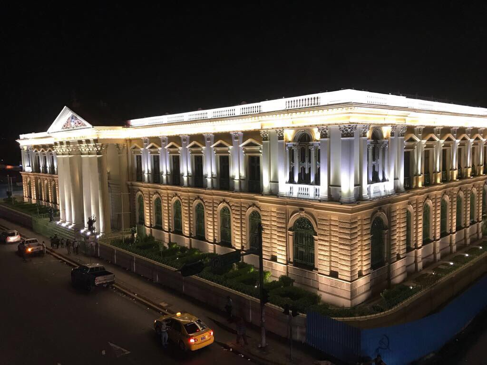
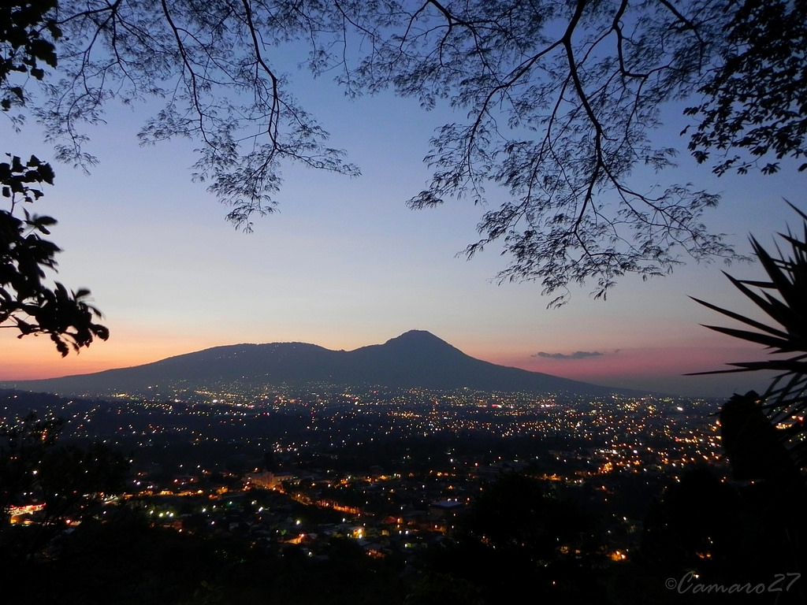
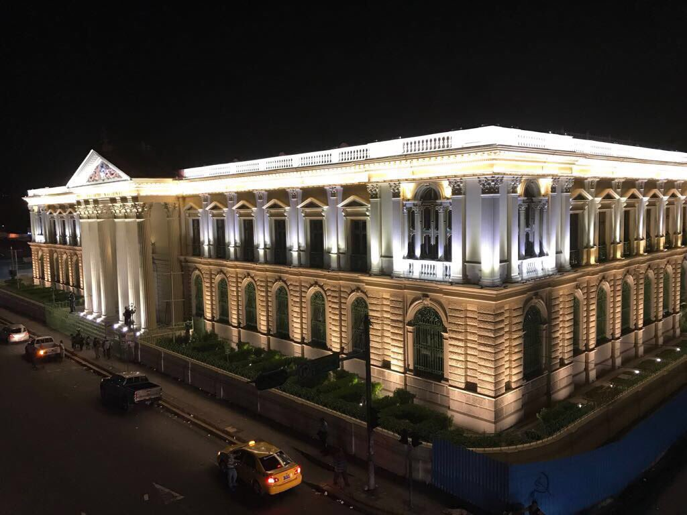
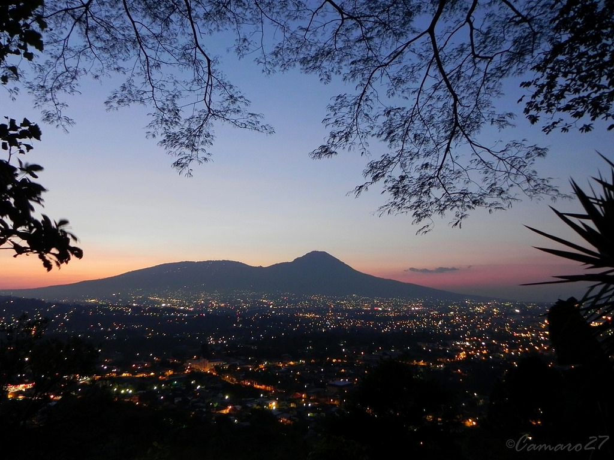

Cabecera: San Salvador
San Salvador es la capital de la República de El Salvador y la cabecera del departamento y municipio homónimos. Como capital de la nación, alberga las sedes del Gobierno y el Consejo de Ministros de El Salvador, Asamblea Legislativa, Corte Suprema de Justicia y demás instituciones y organismos del Estado, así como la residencia oficial del Presidente de la República.la mayor ciudad del país desde el punto de vista económico y demográfico, y asiento de las principales industrias y empresas de servicios de El Salvador.
La primera fundación de San Salvador tuvo lugar en 1525, se refundó en 1528, pero su población estaría asentada en su emplazamiento actual hasta en 1545. Fue un importante centro comercial durante la colonización española, debido a la agricultura del añil, y se convirtió en sede de la Alcaldía Mayor, Intendencia y la Provincia del territorio que, en su mayor parte, hoy conforma El Salvador. En San Salvador ocurrieron dos alzamientos en contra de las autoridades de la corona española a principios del siglo XIX, y sostuvo su autonomía durante la anexión al Primer Imperio Mexicano, al que se anexó por breve tiempo por la fuerza. Con el desarrollo de la agricultura del café, la ciudad tuvo un notable desarrollo en su infraestructura a finales del siglo XIX y principios del siglo XX. Sin embargo, debido a que se encuentra en una zona sísmica, ha sufrido el azote de terremotos a lo largo de su historia.
San Salvador es una de las primeras ciudades de fundación española en la Centroamérica histórica, la región que durante la colonización hispánica de América constituyó el Reino o Capitanía General de Guatemala. También resulta ser la capital más antigua y duradera en la región antedicha, en el sentido que desde su traslado en 1545 al Valle de las Hamacas, ha permanecido ahí desde ese año hasta nuestros días, y, también, debido a que desde que la Monarquía Española la designó como sede administrativa de la provincia sansalvadoreña en 1540, así permaneció hasta llegar a establecerse como capital del Estado salvadoreño. Pese a los terremotos, inundaciones y erupciones que esta población tuvo que soportar desde hace siglos, siempre fue reconstruida en su sitio original. Y, pese a algunos intentos de traslado en áreas menos sísmicas, San Salvador se ha establecido como la principal ciudad de El Salvador.
La ciudad es también la sede de la Arquidiócesis de San Salvador, así como muchas ramas protestantes del cristianismo, incluyendo evangélicos. El Sistema de la Integración Centroamericana (SICA) tiene su sede en San Salvador. En el ámbito deportivo, ha albergado a los Juegos Centroamericanos y del Caribe en 1935 y 2002, y los Juegos Deportivos Centroamericanos en 1977 y 1994.
Población
Con una población de 316 090 habitantes, esta ciudad es la principal urbe del Área Metropolitana de San Salvador, una conurbación de alrededor de 1 775 000 habitantes para el año 2015. Cabe señalar que, por ello, esta aglomeración urbana es la segunda más grande de Centroamérica y la sexta en toda la región de América Central y el Caribe.
Historia
Después de las victorias sobre las huestes pipiles en las batallas de Acajutla y Tacuzcalco, el conquistador Pedro de Alvarado intentó someter a los nativos de la capital del Señorío de Cuzcatlán a su arribo el 18 de junio de 1524. Los cuscatlecos, sin embargo, huyeron a las montañas vecinas y el extremeño tuvo que replegarse hacia la zona de la actual Guatemala. La primera villa de San Salvador se fundó a menos de un año de esta expedición, por una misión no documentada al mando de Gonzalo de Alvarado. La primera mención que existe acerca de este asentamiento es una carta del mismo Pedro de Alvarado en Guatemala el 6 de mayo de 1525 haciendo notar que no se podía celebrar un cabildo por la ausencia de Diego de Holguín quien había partido a tomar el puesto de Alcalde ordinario de la villa de San Salvador.
Debido a las frecuentes rebeliones en el sitio por parte de los nativos, se estableció una nueva villa en el lugar conocido actualmente como Ciudad Vieja, al sur de la actual localidad de Suchitoto (1 de abril de 1528). Su trazado original tardó quince días y llegó a ser poblada por un número de 50 a 60 viviendas, teniendo por alcaldes a Antonio de Salazar y Juan de Aguilar.
Después de la pacificación de la región, la pequeña localidad fue abandonada poco a poco y el nuevo asentamiento se ubicó, el año de 1545, en el valle de Zalcoatitán renombrado como “Valle de las Hamacas”. Se estima que tal acampamiento estuvo en la llamada cuesta del Palo Verde, y que fue conocida como “la Aldea”. Al norte de ese emplazamiento se comenzó a trazar la Plaza Mayor, donde se ubica actualmente la Plaza Libertad; al Este, se erigió la Iglesia consagrada al Santísimo Salvador del Mundo. El 27 de septiembre de 1546, mediante trámites de los procuradores Alonso de Oliveros y Hernán Méndez de Sotomayor, y por petición del Secretario de la Real Corona Juan de Samano ante el infante don Felipe por la ausencia del emperador Carlos V de Alemania y I de España, se elevó la villa a la categoría de ciudad por Real Provisión.
Durante la época colonial era la ciudad más importante de la Alcaldía Mayor de San Salvador, a su vez parte del Reino de Guatemala. En el siglo XVII, la actividad principal de esta región fue el añil, para su exportación a Europa. En la segunda mitad del siglo XVIII, debido a las Reformas borbónicas, que tenían como objetivo mejorar el cobro de impuestos y crear monopolios estatales, se creó la Intendencia de San Salvador en 1785; la propia ciudad fue cabecera de su partido.
El valle en el que se ubica San Salvador lleva por nombre "de Las Hamacas" o de "Zalcoatitán". El primero fue puesto por los conquistadores ibéricos debido a su naturaleza sísmica. Y es que este valle es atravesado por muchas fallas tectónicas, razón por la que San Salvador ha sido destruida y reconstruida más de una veintena de veces desde que se trasladó a este territorio en 1545. El valle es muy estrecho comparado con otros valles salvadoreños y se encuentra lejos de ser plano, ya que desde el Oeste, donde se encuentra el Volcán de San Salvador, alcanza una altura de más de 1000 msnm para luego ir descendiendo poco a poco hasta encontrarse con el Cerro San Jacinto y las riveras del Río Acelhuate, alcanzando acá una escasa altura de 590 msnm, resultando así a la vista de cualquier espectador que este valle es solo una prolongada extensión de las laderas del Volcán de San Salvador. Además de esto, el valle no es siempre continuo, ya que este es atravesado por muchos arenales y ríos, tales como el Arenal La Mascota, el Arenal Monserrat, el Arenal Tutunichapa, entre otros, todos discurriendo de Oeste a Este, siguiendo la depresión misma de la llanura hasta desembocar en el río Acelhuate.
Por el Sur, el valle y municipio de San Salvador es flanqueado por la Cordillera del Bálsamo, separándolo esta de la llanura costera. Hacia el Norte, el paso del Valle de Las Hamacas es bloqueado por unas suaves cerranías correspondientes a los municipios de Ayutuxtepeque y ciudad Delgado, que separan a San Salvador de otro largo valle que se extiende hasta la cuenca del Río Lempa en el Norte del país.
Municipios
Se divide en tres distritos (Santo Tomás, San Salvador y Tonacatepeque), los cuales se dividen en 19 municipios, que a continuación se detallan:
1. Aguilares
2. Apopa
3. Ayutuxtepeque
4. Cuscatancingo
5. Delgado
6. El Paisnal
7. Guazapa
8. Ilopango
9. Mejicanos
10. Nejapa
11. Panchimalco
12. Rosario de Mora
13. San Marcos
14. San Martín
15. San Salvador
16. Santiago Texacuangos
17. Santo Tomás
18. Soyapango
19. Tonacatepeque
Extensión Territorial
San Salvador está ubicado en la zona central del país. Su elevación se encuentra entre 600 y 1000 metros sobre el nivel del mar. Aunque la propia ciudad se encuentra a 650 msnm. Limita al norte con los municipios de Nejapa, Mejicanos, Cuscatancingo, y Ciudad Delgado, al este con Soyapango y San Marcos, al sur con Panchimalco y también con San Marcos, y al oeste con Antiguo Cuscatlán y Santa Tecla.
Turismo
Lleno de atracciones por descubrir, El Salvador ofrece al visitante más de 300 kilómetros de costa del océano pacifico, majestuosos volcanes y un extenso sistema de parques y reservas nacionales además de toda la cultura de sus pueblos coloniales y parques arqueológicos, vestigio de pasado rico en historia.
Conocido como el país de las distancias cortas, El Salvador le permite al turística desayunar en la playa, almorzar en la ciudad y cenar en la montaña, todo en un mismo dia. Un destino ideal para disfrutar de unas magníficas vacaciones y su experto local tiene todo lo que usted necesita.
Principales Lugares Turisticos:
El Boqueron
La Puerta del Diablo
Mirador de lkos Planes
Parque Balboa
Parque acuático de Panchimalco
Mirador Municipal
Cultura
Para el disfrute de la vida nocturna en esta capital existe una variada oferta de restaurantes, discotecas y bares. Para el caso, hay zonas identificadas que concentran estos centros de esparcimiento: la Zona Rosa, al Oeste, sobre el Bulevard del Hipódromo; la Zona Real, ubicada en los alrededores del Bulevar de los Héroes; y el Paseo General Escalón. Cabe destacar que algunos de estos contornos están comprendidas dentro de las áreas donde no es permitida el porte de armas de acuerdo a una ley de la república. Los espectáculos musicales multitudinarios se realizan en los grandes recintos deportivos como el Gimnasio Nacional, el Estadio Cuscatlán, o el anfiteatro del Centro Internacional de Ferias y Convenciones. Otra opción es la segunda estructura más alta del país: la Torre Futura, que alberga oficinas y área comercial.
A principios del mes de agosto se celebran las fiestas patronales dedicadas al Divino Salvador del Mundo. En esta ocasión los eventos principales son los desfiles de carrozas que atraviesan la ciudad, además de una procesión religiosa el 5 de agosto, que culmina en una ceremonia que representa la Transfiguración de Jesús; y una misa principal, el día 6 de agosto, frente a la Catedral Metropolitana.
Por otro lado, la XIV Asamblea de la Unión de Ciudades Capitales Iberoamericanas eligió a San Salvador como Capital Iberoamericana de la Cultura para el año 2011, en vista de la celebración del Bicentenario del Primer Grito de Independencia de Centroamérica.
Gastronomía
La gastronomía de El Salvador se basa en productos como el arroz, frijoles, maíz, carnes, ricas frutas y verduras, productos lacteos, además de pescados y mariscos.
Entre sus platos típicos hay que destacar la pupusa, que es una tortilla de maíz rellena de queso, frijoles o chicharrones, etre otros ingredientes. Frijoles con arroz, sopa de frijoles, tamales de queso, pollo o gallina.
La cocina tradicional salvadoreña refleja las costumbres de los antiguos pueblos, conservándose siempre como elemento principal el maíz.
Tortillas
Tamales
Batidos
Pupusas
yuca con chicharron
Chica
La Típica Semita
Dulce de Atado
Jocotes en miel
Torrejas
Empanadas, etc.
 




Google Maps
Mapa de San Salvador